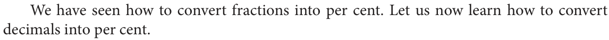
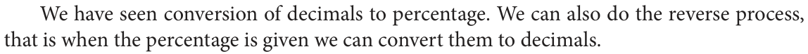

2.1.3 Converting Decimals to Percentage
We have seen how to convert fractions into per cent. Let us now learn how to convert decimals into per cent.
Example 2.10 Convert the given decimals to percentage.
- 0.85 (ii) 0.05 (iii) 0.3 (iv) 0.025 (v) 2.25
Solution:
(i) \(0.85 = 0.85 \times 100\% = \frac{85}{100} \times 100\% = 85\%\)
(ii) \(0.05 = \frac{5}{100} \times 100\% = 5\%\)
(iii) \(0.3 = \frac{3}{10} \times 100\% = 30\%\)
(iv) \(0.025 = \frac{25}{1000} \times 100\% = \frac{25}{10}\% = \frac{5}{2}\%\) or \(2.5\%\)
(v) \(2.25 = \frac{225}{100} \times 100\% = 225\%\)
Try these
Convert these decimals to percentage.
(i) 0.25 (ii) 0.07 (iii) 0.8 (iv) 0.375 (v) 3.75
2.1.4 Converting Percentages to Decimals

We have seen conversion of decimals to percentage. We can also do the reverse process, that is when the percentage is given we can convert them to decimals.
Example 2.11 Convert the given percentage to decimals.
- 58% (ii) 8% (iii) 30% (iv) 120% (v) 1.25%
Solution:
(i) \(58\% = \frac{58}{100} = 0.58\)
(ii) \(8\% = \frac{8}{100} = 0.08\)
(iii) \(30\% = \frac{30}{100} = 0.3\)
(iv) \(120\% = \frac{120}{100} = 1.2\)
(v) \(1.25\% = \frac{1.25}{100} = 0.0125\)
From the above examples we see that to convert percentage to decimals we first convert it into fraction and get the solution.
Try these
Write these percentages as decimals.
(i) 3% (ii) 25% (iii) 80% (iv) 67% (v) 17.5% (vi) 135% (vii) 0.5%
Example 2.12 Malar bought 1.75 m of fabric from a roll of 25 m. Express the fabric bought in terms of percentage.
Solution
Total length of the fabric \(= 25\) m
Length of the fabric bought \(= 1.75\) m
Percentage of the fabric bought \(= \frac{1.75}{25} \times \frac{100}{100} = \frac{175}{25 \times 100} = \frac{7}{100} = 7\%\)
Area as Percentage
Percentages also help us to estimate the area.
Example 2.13 How many per cent in the Fig. 2.3 is shaded as blue?
Solution
The fraction in the Fig. 2.3, that is shaded \(= \frac{2}{4} = \frac{1}{2}\).
That is half of the Fig. 2.3 is shaded blue.
So, the percentage of shaded portion \(= \frac{1}{2} \times 100\% = 50\%\)
Thus, 50% of the Fig. 2.3 is shaded.